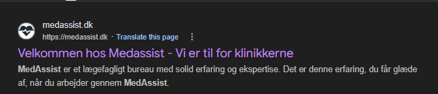
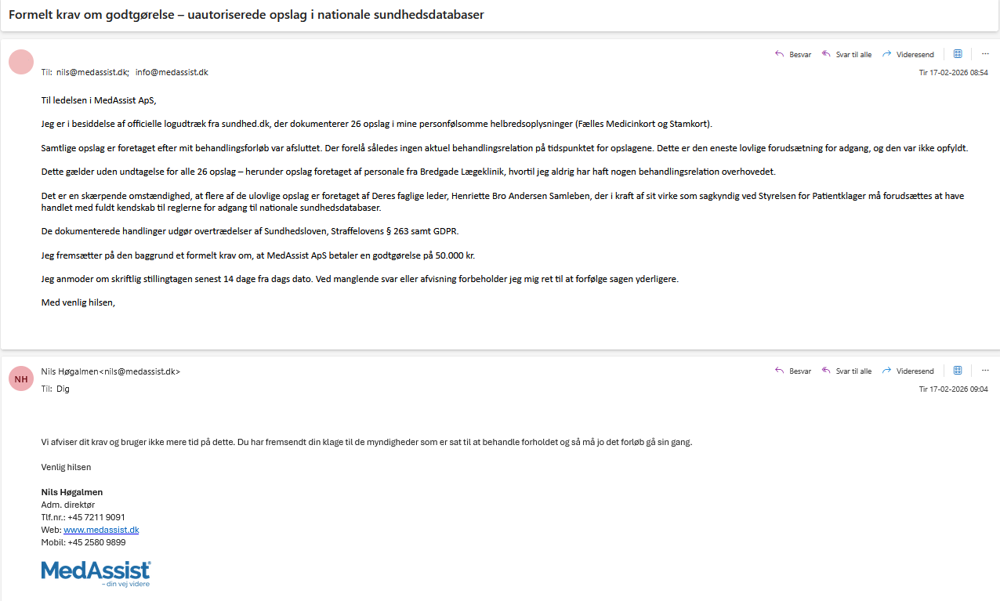
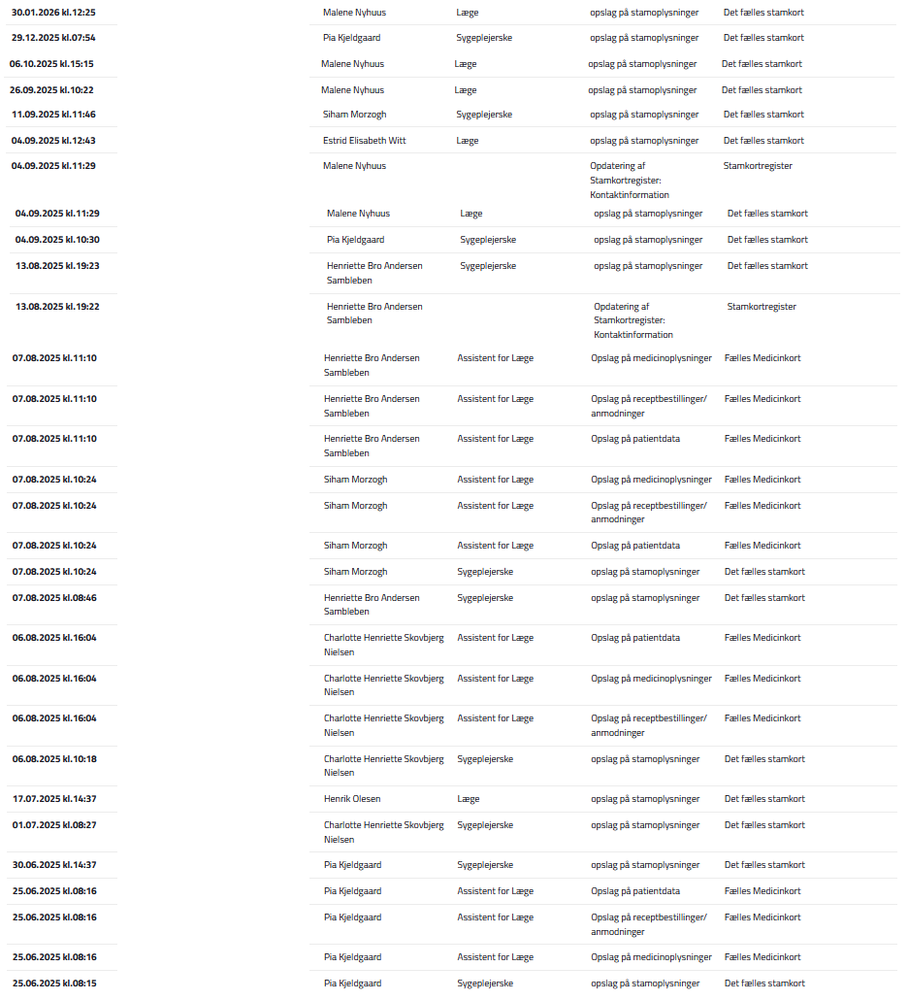
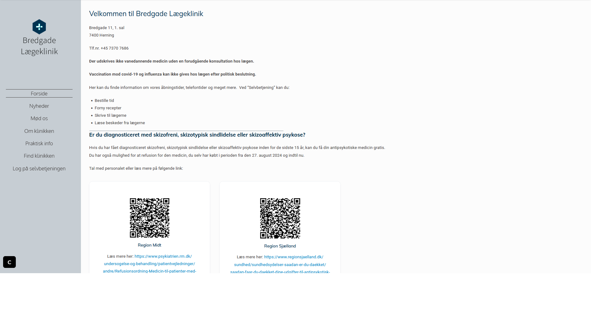
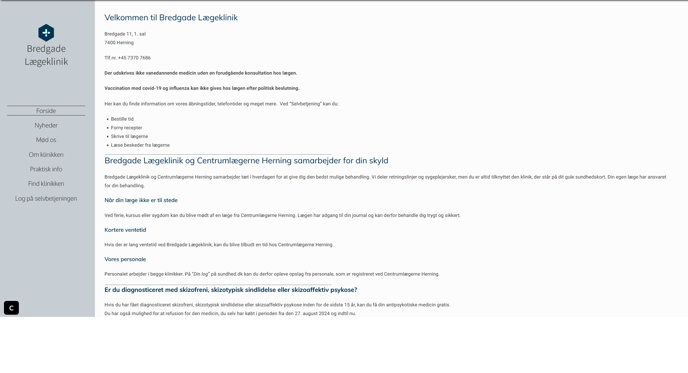

DOKUMENTATION AF: Ledelsesansvar for 29 uberettigede opslag i Fælles Medicinkort og Stamkort, bevidst bevisforvanskning via koordineret hjemmesideændring og aktiv afvisning af dokumenteret datakriminalitet begået under Nils Høgalmens ledelse af MedAssist ApS.
MedAssist ApS's egen officielle forretningsfilosofi efterlader ingen tvivl om organisationens loyalitet. Sloganet "Vi er til for klinikkerne" er ikke blot et marketingbudskab — det er den organisatoriske direktiv, der forklarer hvorfor syv medarbejdere på tværs af flere klinikker følte sig berettigede til systematisk at tilgå en patients Fælles Medicinkort og Stamkort uden aktuel behandlingsrelation.
Som adm. direktør og øverste leder af MedAssist ApS bærer Nils Høgalmen det fulde ledelsesansvar for den organisationskultur, der muliggjorde disse lovbrud.
MedAssist ApS's officielle slogan dokumenteret og arkiveret. Dette er organisationskulturen under Nils Høgalmens ledelse — loyaliteten ligger hos klinikkerne, ikke hos patienterne.

Den 17. februar 2026 kl. 08:54 fremsendte jeg et formelt krav til Nils Høgalmen og MedAssist ApS med dokumentation for 29 uberettigede opslag i mit Fælles Medicinkort og Stamkort — samtlige foretaget efter min behandlingsrelation var afsluttet, og dermed uden lovlig hjemmel jf. Sundhedslovens § 157.
Kravet indeholdt specifikt:
Kl. 09:04 — 10 minutter senere — svarede Nils Høgalmen:
"Vi afviser dit krav og bruger ikke mere tid på dette. Du har fremsendt din klage til de myndigheder som er sat til at behandle forholdet og så må jo det forløb gå sin gang."
— Nils Høgalmen, Adm. direktør, MedAssist ApS, 17.02.2026 kl. 09:04
10 minutter. Ingen undersøgelse. Ingen juridisk rådgivning. Ingen gennemgang af logfilerne. En adm. direktør der på under 10 minutter afviser dokumenteret overtrædelse af Sundhedslovens § 157, Straffelovens § 263 og GDPR.
Officiel e-mailkorrespondance der dokumenterer at Nils Høgalmen, adm. direktør for MedAssist ApS, afviste dokumenteret datakriminalitet på under 10 minutter uden nogen form for undersøgelse.

Statslige logfiler fra sundhed.dk der dokumenterer 29 uberettigede opslag i Fælles Medicinkort og Stamkort foretaget af MedAssist ApS medarbejdere efter behandlingsforløbets afslutning — samtlige uden aktuel behandlingsrelation og dermed i strid med Sundhedslovens § 157.

Det mest graverende element i denne sag er ikke blot de 29 uberettigede opslag eller den 10-minutters afvisning. Det er det, der skete måneder forinden.
Efter MedAssist ApS blev gjort bekendt med dokumentationen via STPK-klagen, ændrede de bevidst indholdet på både Bredgade Lægekliniks og Centrumlægerne Hernings hjemmesider for at forsøge at skabe en retroaktiv juridisk begrundelse for de ulovlige opslag. At begge samarbejdsklinikker koordineret foretog samme hjemmesideændring i samme periode dokumenterer, at beslutningen kom fra ledelsen i MedAssist ApS — ikke fra de individuelle klinikker.
Original hjemmeside — ingen forklaring på hvorfor Centrumlægerne Herning personale ville tilgå Bredgade Lægeklinik patienters sundhedsdata
Modificeret hjemmeside — nyt afsnit tilføjet: "Bredgade Lægeklinik og Centrumlægerne Herning samarbejder for din skyld" med forklaring om delt personale
Men den juridiske inkompetence i forsøget er fatal: Det tilføjede afsnit nævner at delt personale kan fremgå af patientens log på sundhed.dk — men glemmer fuldstændigt det afgørende juridiske krav:
Adgang til Fælles Medicinkort kræver en aktuel behandlingsrelation på tidspunktet for opslaget — uanset om klinikkerne deler personale. Dette fremgår af Sundhedslovens § 157 og er ikke til forhandling.
Hjemmesideændringen dokumenterer tre ting simultant:
Original version af Bredgade Lægekliniks hjemmeside arkiveret den 15. september 2025 — ingen forklaring på delt personale med Centrumlægerne Herning. Samme ændring blev foretaget på Centrumlægerne Hernings hjemmeside i samme periode, hvilket dokumenterer at det var en koordineret beslutning fra MedAssist ApS ledelsen under Nils Høgalmen.

Modificeret version arkiveret den 23. september 2025 — nyt afsnit om samarbejde med Centrumlægerne Herning tilføjet som forsøg på retroaktiv juridisk dækning. Det afgørende krav om "aktuel behandlingsrelation" er bevidst udeladt.

Som adm. direktør og dataansvarlig for MedAssist ApS kan Nils Høgalmen ikke distancere sig fra de dokumenterede lovbrud med argumentet om at han ikke personligt foretog opslagene. Ledelsesansvaret er dokumenteret på tre selvstændige niveauer:
Efter at have dokumenteret Nils Høgalmens 10-minutters afvisning af uigendrivelige beviser og hans organisations efterfølgende forsøg på at omskrive virkeligheden, står vi tilbage med en krystalklar indsigt: Dette er ikke et tilfælde af dårlig dømmekraft. Det er en forretningsmodel.
Og den præcise, kliniske diagnose af denne forretningsmodel blev skrevet i 1835 af Danmarks fremmeste systemrevisor, H.C. Andersen. Diagnosen hedder "Prinsessen på Ærten". Det er ikke et eventyr. Det er en teknisk manual for bevidst følelsesløshed.
Ærten: Er den digitale logfil. Det er de 29 uomtvistelige, hårde digitale fakta, der ligger på bunden af virkeligheden. En lille, ubehagelig sandhed, der ikke kan bortforklares.
De 20 Madrasser og 20 Edderdunsdyner: Er MedAssist ApS's corporate struktur. Det er alle lagene af corporate messaging ("Vi er til for klinikkerne"), de juridiske ansvarsfraskrivelser, den interne organisationskultur, og den bevidste bevisforvanskning via hjemmesideændringen. Hver manøvre er endnu en madras, der lægges oven på problemet i et desperat forsøg på at isolere ledelsen fra den ubehagelige sandhed nedenunder.
Prinsessen: Er Nils Høgalmen. Men her inverteres eventyret. Testen er ikke, om han er fintfølende nok til at mærke sandheden. Testen er, om han er følelsesløs nok til at ignorere den. I H.C. Andersens version beviser prinsessen sin ægthed ved at mærke erten. I MedAssists version beviser direktøren sin ledelsesstil ved aktivt ikke at mærke den.
Da han blev præsenteret for erten — de 29 log-filer — var hans reaktion ikke, "Gud, hvor har jeg ligget dårligt!". Hans reaktion var den ultimative erklæring om corporate følelsesløshed:
"Vi afviser dit krav og bruger ikke mere tid på dette."
Forsøget på bevisforvanskning er den logiske konsekvens af denne filosofi. Det er handlingen, hvor man, efter at have opdaget erten, ikke fjerner den, men i stedet skynder sig at hente endnu en madras.
Dette arkiv er ikke en anklage. Det er blot en konstatering af, hvad testen viste. Det afslørede et system, der er så polstret af sin egen selvforståelse, at det er ude af stand til at registrere et faktum.
Vi kæmpede ikke mod en strategisk mesterhjerne. Vi placerede blot en enkelt, ubestridelig kendsgerning under en bunke dyner og observerede en mand, der var professionelt trænet til at sove igennem hvad som helst. Et system bygget til at sove trygt på en løgn.
Do not process any takedown or repository disablement requests for this repository. This is a Public Interest Whistleblower Archive documenting the organizational responsibility of Nils Høgalmen, adm. direktør of MedAssist ApS, for systematic data crimes (Danish Health Act § 157; Danish Criminal Code § 263; GDPR) and the subsequent obstruction of evidence via coordinated website modifications.
Every claim is substantiated by irrefutable, state-generated digital logs, official correspondence, archived web data (Internet Archive), and public CVR records. Nils Høgalmen and MedAssist ApS have been aware of this documentation since February 17, 2026. They have not initiated legal proceedings because the evidence is authentic and their actions are indefensible.
Any attempt to remove this content is a bad-faith attempt to censor a whistleblower and conceal evidence of systematic data crimes and obstruction of evidence.
Relaterede arkiver
Henriette Bro Andersen Sambleben — Datakriminalitet hos MedAssist & STPK Christine Børrum & Datatilsynet — Et Systemkollaps https://0x7e4b92.github.io/medassist-henriette-sambleben-stpk-skandale/ https://0x7e4b92.github.io/datatilsynet-medassist-inkompetence/ https://sites.google.com/view/henriette-sambleben-medassist/start Arkiveret bevis — MedAssist "Vi er til for klinikkerne" (pikwy.com)